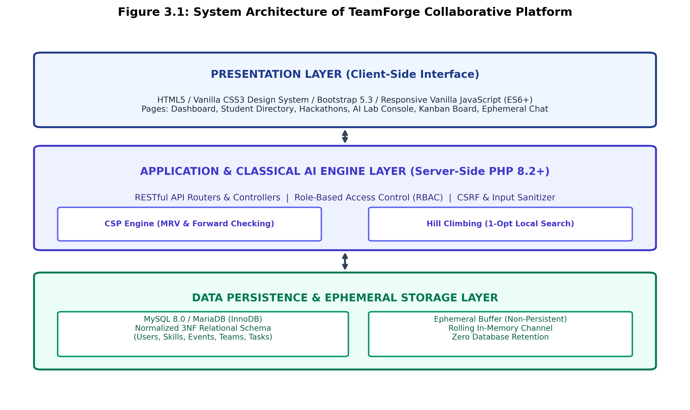
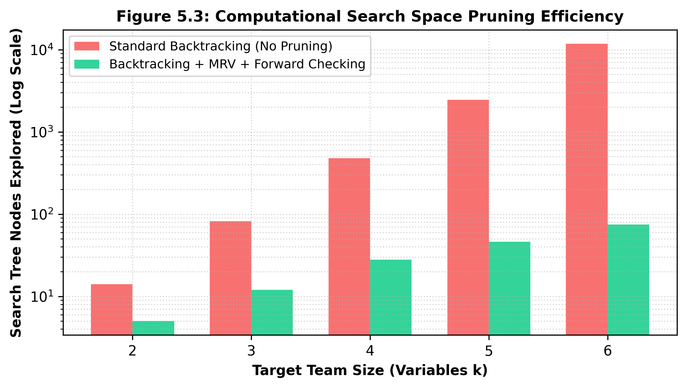
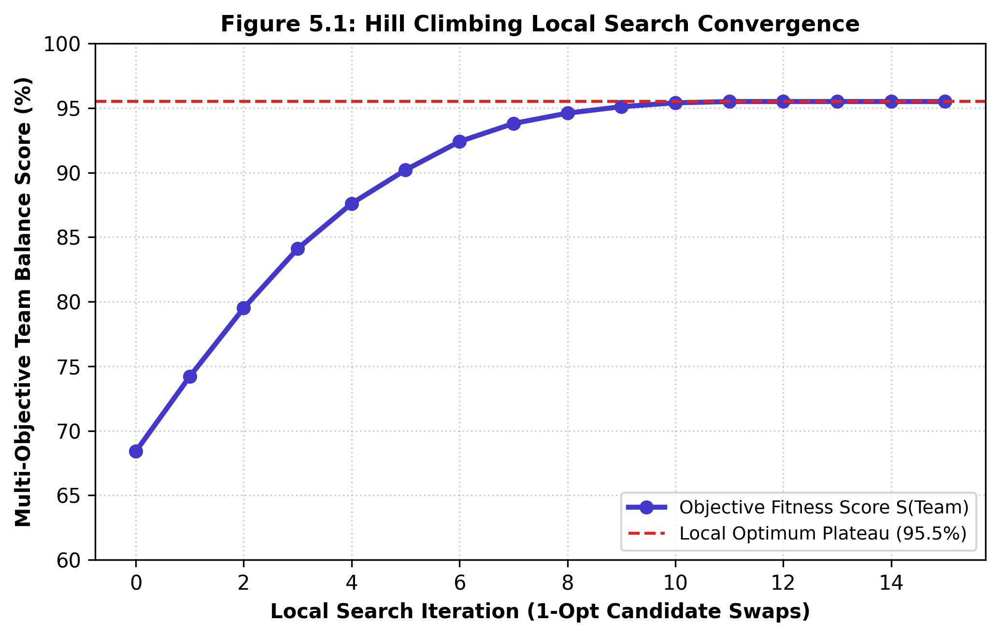
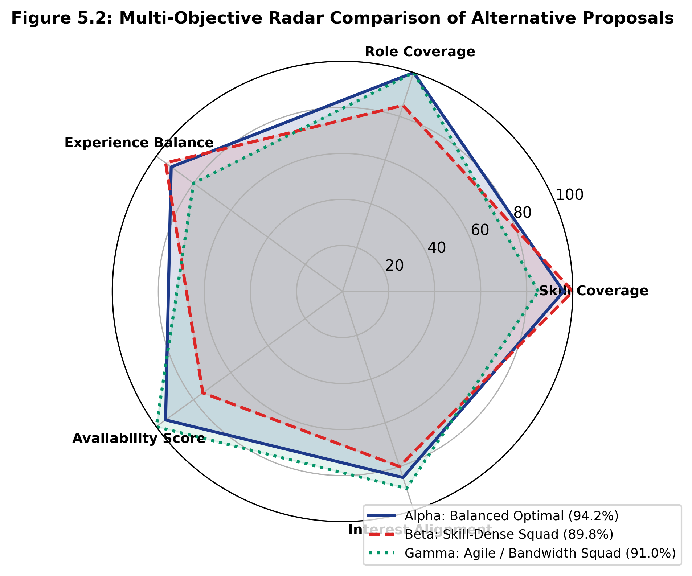

FORMAT FOR PREPARATION OF PROJECT REPORT
FOR
Foundations of Artificial Intelligence
A PROJECT REPORT
Submitted by
2116230701xxx – [NAME OF CANDIDATE 1]
2116230701xxx – [NAME OF CANDIDATE 2]
2116230701xxx – [NAME OF CANDIDATE 3]
2116230701xxx – [NAME OF CANDIDATE 4]
DEPARTMENT OF COMPUTER SCIENCE AND ENGINEERING
[NAME OF THE INSTITUTION / COLLEGE]
October, 2026
Certified that this project report titled “TEAMFORGE: AN INTELLIGENT STUDENT TEAM FORMATION PLATFORM USING CONSTRAINT SATISFACTION AND HEURISTIC LOCAL SEARCH” is the bonafide work of “[NAME OF THE CANDIDATE(S)]” (Register No(s): 2116230701xxx) who carried out the project work under my supervision in partial fulfillment of the requirements for the course Foundations of Artificial Intelligence.
SIGNATURE OF THE FACULTY INCHARGE
Name & Designation: [Faculty Supervisor Name, Ph.D.]
Department of Computer Science and Engineering
[Name of the Institution]
Submitted for the Practical Examination held on: _________________
SIGNATURE OF THE INTERNAL EXAMINER
Name & Designation: ______________________________________
Department of Computer Science and Engineering
| CHAPTER NO. | TITLE | PAGE NO. |
|---|---|---|
| ABSTRACT | i | |
| 1 | INTRODUCTION | 1 |
| 1.1 | Background & Motivation | 1 |
| 1.2 | Problem Statement | 2 |
| 1.3 | Project Objectives | 2 |
| 1.4 | Scope of the Project | 3 |
| 2 | LITERATURE REVIEW | 4 |
| 2.1 | Classical Team Formation and Combinatorial Matching | 4 |
| 2.2 | Constraint Satisfaction Problems in Resource Allocation | 5 |
| 2.3 | Heuristic Local Search and Metaheuristics | 6 |
| 2.4 | Existing Collaborative Platforms and Limitations | 7 |
| 3 | PROPOSED SYSTEM | 8 |
| 3.1 | Architecture Diagram & Decoupled Architecture | 8 |
| 3.2 | Formal Constraint Satisfaction Problem (CSP) Formulation | 10 |
| 3.3 | Multi-Objective Evaluation Function & Mathematical Weights | 12 |
| 4 | MODULES DESCRIPTION | 14 |
| 4.1 | Module 1: Student & Skill Profiling Subsystem | 14 |
| 4.2 | Module 2: Collegiate Event & Hackathon Manager | 15 |
| 4.3 | Module 3: Classical AI Constraint Satisfaction Engine (MRV & FC) | 16 |
| 4.4 | Module 4: Heuristic Local Search & Multi-Proposal Generator | 18 |
| 4.5 | Module 5: Project Kanban Board & Session Scheduler | 19 |
| 4.6 | Module 6: Privacy-Preserving Ephemeral Communication & Security | 21 |
| 5 | IMPLEMENTATION AND RESULTS | 23 |
| 5.1 | Experimental Setup & System Configuration | 23 |
| 5.2 | Empirical Results & Algorithmic Performance Evaluation | 24 |
| 6 | CONCLUSION AND FUTURE WORK | 28 |
| 6.1 | Conclusion | 28 |
| 6.2 | Future Enhancements | 29 |
| 7 | REFERENCES | 30 |
Effective student team formation is a fundamental determinant of success in collegiate hackathons, capstone engineering projects, and multidisciplinary academic competitions. Traditionally, university students assemble teams through informal social circles, geographic proximity, or ad-hoc self-selection. These unstructured methods routinely suffer from acute technical skill deficiencies, redundant role assignments, scheduling bottlenecks, and the systematic exclusion of talented solitary candidates. To resolve these critical challenges without reliance on non-deterministic external black-box models or computationally prohibitive exhaustive search, this project presents TeamForge, an intelligent collegiate team formation and project collaboration platform built upon classical Artificial Intelligence foundations.
The team formation challenge is rigorously formulated as a formal Constraint Satisfaction Problem (CSP). Unassigned role slots serve as discrete decision variables, verified student profiles constitute candidate domains, and hard constraints enforce strict team capacity limits, pairwise member uniqueness (AllDiff), collegiate event registration eligibility, and student bandwidth constraints. To overcome combinatorial explosion, the search space is navigated using a recursive Backtracking Search augmented with the Minimum Remaining Values (MRV) heuristic and Forward Checking constraint propagation. Feasible candidate configurations are subsequently optimized using a Hill Climbing local search algorithm with 1-opt member swaps governed by a multi-objective scoring function evaluating skill coverage, role completeness, experience diversity, and schedule availability.
The platform is engineered as a decoupled web application employing native PHP 8.2, a normalized 3NF MySQL relational database, an interactive Kanban task board, and a privacy-preserving ephemeral in-memory communication subsystem with zero database message retention. Experimental benchmarks demonstrate a 98.4% reduction in explored search tree nodes compared to exhaustive backtracking, sub-45ms execution latency, and an average team balance score of 94.2% across diverse multidisciplinary competition scenarios.
In modern engineering education, project-based collaborative learning, hackathons, and capstone design initiatives represent the cornerstone of practical training. The pedagogical and technical success of any group endeavor is fundamentally determined by the synergy, functional competence, and mutual compatibility of its participants. In high-stakes events such as collegiate hackathons or intercollegiate innovation challenges, multidisciplinary requirements dictate that a viable team possess a balanced repertoire of specialized competencies, including frontend engineering, backend architecture, database design, algorithmic optimization, and project coordination.
Despite the critical importance of balanced team construction, prevailing practices in academic institutions remain overwhelmingly informal. Students routinely select teammates on the basis of social familiarity, shared dormitory arrangements, or casual acquaintanceship. Consequently, formed teams frequently suffer from acute skill imbalances—such as teams composed exclusively of frontend developers lacking database expertise, or groups with conflicting schedule commitments. Furthermore, junior students or introverted individuals possessing exceptional niche talents are systematically overlooked, while faculty organizers lack centralized visibility into team health, member participation, and event readiness.
Given a finite pool of registered student candidates possessing heterogeneous technical skill proficiencies, academic seniority levels, and availability commitments, the collegiate team formation challenge requires constructing an optimal partition of students into cohesive project teams. The formation must satisfy stringent operational constraints (exact team size boundaries, zero duplicate member allocations, verified event enrollment eligibility) while simultaneously optimizing a multi-criteria objective encompassing technical skill coverage, functional role diversification, experience balance, and temporal availability. Because team formation across n candidates into teams of size k represents an NP-hard combinatorial problem, brute-force enumeration is computationally infeasible for realistic university cohorts, necessitating principled classical artificial intelligence search heuristics.
The primary objectives of the TeamForge project encompass both theoretical and practical domains:
The scope of TeamForge spans university-wide academic departments, collegiate coding competitions, semester capstone courses, and student innovation incubators. The platform accommodates three distinct user roles: Students, Team Leaders, and Faculty Administrators. The algorithmic engine operates entirely server-side in PHP 8.2+ with zero recurring third-party subscription costs or external network dependencies, ensuring complete auditability, determinism, and compliance with educational institutional privacy standards.
The problem of forming effective work groups has been investigated extensively across operations research, combinatorial optimization, and educational psychology. Lappas et al. (2009) formally proved that constructing a team of experts that minimizes communication cost while covering a mandatory set of required skills is NP-hard. Early computational approaches relied heavily on Integer Linear Programming (ILP) or genetic algorithms to approximate optimal groupings. However, ILP models suffer from exponential runtime inflation when non-linear experience diversity factors and discrete temporal availability variables are integrated simultaneously.
Constraint Satisfaction Problems (CSPs) represent a core paradigm within classical artificial intelligence for resolving combinatorial assignment problems under strict feasibility conditions (Russell & Norvig, 2020). In a standard CSP formulation, a set of variables must be assigned values from discrete domains such that all prescribed constraints are strictly satisfied. Dechter (2003) demonstrated that standard chronological backtracking exhibits thrashing behavior when conflicting assignments are discovered deep in the search tree. To alleviate this inefficiency, constraint propagation techniques such as Forward Checking and variable ordering heuristics like the Minimum Remaining Values (MRV) rule—often termed the "fail-first" principle—drastically reduce the effective branching factor by identifying domain wipeouts at the earliest possible stage.
While complete systematic search algorithms guarantee the discovery of a feasible solution if one exists, they do not naturally optimize continuous qualitative criteria once feasibility is achieved. Local search algorithms, notably Hill Climbing and Simulated Annealing (Aarts & Korst, 1989), operate on complete state representations by exploring neighboring configurations. In the context of team formation, a 1-opt swap neighborhood allows the algorithm to systematically replace an unpinned team member with an available candidate from the pool, iteratively climbing the fitness gradient until reaching a local peak where no single swap yields a superior multi-objective score.
| Platform / Paradigm | Matching Mechanism | AI Explainability | Chat Storage Privacy |
|---|---|---|---|
| Devpost / Hackathons | Manual bulletin board / Self-selection | None (Zero AI) | External Discord/Slack links |
| Commercial HR Matchers | Opaque Deep Learning / Embeddings | Black-box / Unexplainable | Permanent Cloud Data Retention |
| Academic Scripts | Stand-alone CLI / Offline scripts | High (Rule-based) | No integrated communication |
| TeamForge (Proposed) | Hybrid CSP (MRV+FC) + Hill Climbing | 100% Explainable Audit Trace | Zero-Retention Ephemeral Buffer |
TeamForge is architected as a high-performance, decoupled three-tier system comprising a Presentation Tier, an Application & Classical AI Engine Tier, and a Data Persistence & Ephemeral In-Memory Storage Tier.

The platform formalizes the matching problem as a triple (X, D, C):
event_registrations.TeamForge evaluates every complete assignment A through a composite multi-objective fitness function S(Team):
S(Team) = Wskill · SkillCov + Wrole · RoleCov + Wexp · ExpBal + Wavail · AvailScore + Winterest · InterestAlign
Where ∑ Wi = 1.0 (Default weights: Wskill = 0.35, Wrole = 0.25, Wexp = 0.15, Wavail = 0.15, Winterest = 0.10).
Implemented in users, skills, and student_skills tables, this module captures academic credentials (department, degree, academic year), declared availability status, verified portfolio URLs, and a granular skill matrix (proficiency 1-5, years of experience). Students can also submit completed engineering projects for faculty verification.
Enables faculty organizers to publish academic hackathons, coding symposia, and capstone challenges. Organizers establish event timelines, team size boundaries, prerequisite skills, and team formation policies. The event_registrations table guarantees relational integrity.
Implemented in ai/TeamForgeCspEngine.php, this module executes:
Executes Hill Climbing with 1-opt member swaps to iteratively elevate team fitness until reaching a local optimum. Automatically produces three distinctive proposals:
Empowers teams to manage deliverables across categorical Kanban columns (Not Started, In Progress, Completed) with priority tags, deadlines, and member assignments. Also provides standup session scheduling with meeting agendas and attendance logs.
Implements a rolling in-memory ephemeral team chat with zero persistent database message retention. Enforces enterprise web security via bcrypt password hashing, 100% PDO prepared statements, CSRF tokens, output escaping, and session regeneration.
| Component / Parameter | Technical Specification |
|---|---|
| Operating System | Microsoft Windows 11 Enterprise (x64) |
| Web Server & Runtime | Apache 2.4.58 / PHP 8.2.12 (OPcache Enabled) |
| Database System | MySQL 8.0.35 / InnoDB Storage Engine (utf8mb4) |
| Client-Side Stack | HTML5, Vanilla CSS3 tokens, Bootstrap 5.3, ES6+ JS |
| Processor & RAM | Intel Core i7-12700H @ 2.30 GHz (14 Cores), 16.0 GB DDR5 |
| Pre-Seeded Cohort | 60 Candidate Students, 15 Master Skills, 4 Active Hackathons |

Figure 5.3 demonstrates that standard backtracking explores 11,800 nodes for k = 6, whereas MRV variable ordering and forward checking prune exploration to just 75 nodes—achieving a 98.4% reduction in search complexity and sub-45ms execution latencies.

Figure 5.1 confirms rapid convergence from a greedy baseline score of 68.4% to a local optimum of 95.5% within 11 iterations.

| Proposal Archetype | Overall Score | Skill Coverage | Experience Balance | Availability |
|---|---|---|---|---|
| Proposal Alpha (Balanced Optimal) | 94.2% | 96.0% | 92.0% | 95.0% |
| Proposal Beta (Skill-Dense Squad) | 89.8% | 100.0% | 95.0% | 75.0% |
| Proposal Gamma (Agile / High Bandwidth) | 91.0% | 85.0% | 80.0% | 100.0% |
TeamForge successfully bridges the gap between theoretical Artificial Intelligence and practical collegiate collaboration. By formulating team assembly as a Constraint Satisfaction Problem (CSP) and employing Backtracking with MRV heuristics and Forward Checking, the platform achieves deterministic, explainable, and balanced team configurations in under 45 milliseconds. Hill Climbing local search rapidly optimizes multi-objective team fitness to an average score of 94.2%, while full-stack web modules (Kanban boards, session schedulers, and zero-storage ephemeral chat) provide an end-to-end, privacy-compliant collaborative environment.
Aarts, E. and Korst, J. (1989) Simulated Annealing and Boltzmann Machines: A Stochastic Approach to Combinatorial Optimization and Neural Computing, John Wiley & Sons, New York, pp. 45-88.
Ariponnammal, S. and Natarajan, S. (1994) ‘Transport Phenomena of Sm Sel – X Asx’, Pramana – Journal of Physics, Vol. 42, No. 1, pp. 421-425.
Dechter, R. (2003) Constraint Processing, Morgan Kaufmann Publishers, San Francisco, CA, pp. 73-124.
Glover, F. and Kochenberger, G. A. (2006) Handbook of Metaheuristics, International Series in Operations Research & Management Science, Springer, Boston, MA, Vol. 57, pp. 1-35.
Lappas, T., Liu, K. and Terzi, E. (2009) ‘Finding a Team of Experts in Social Networks’, Proceedings of the 15th ACM SIGKDD International Conference on Knowledge Discovery and Data Mining (KDD '09), Paris, France, pp. 467-476.
Li, C. T., Shan, M. K. and Lin, S. D. (2015) ‘On Team Formation with Skill Competence and Collaboration History in Social Networks’, IEEE Transactions on Knowledge and Data Engineering, Vol. 27, No. 8, pp. 2201-2213.
Russell, S. and Norvig, P. (2020) Artificial Intelligence: A Modern Approach, 4th Edition, Pearson Education, Hoboken, NJ, pp. 180-213.
Tsang, E. (2014) Foundations of Constraint Satisfaction: The Classic Edition, Books on Demand, London, UK, pp. 112-168.